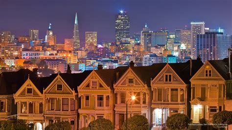
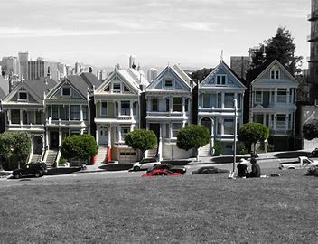
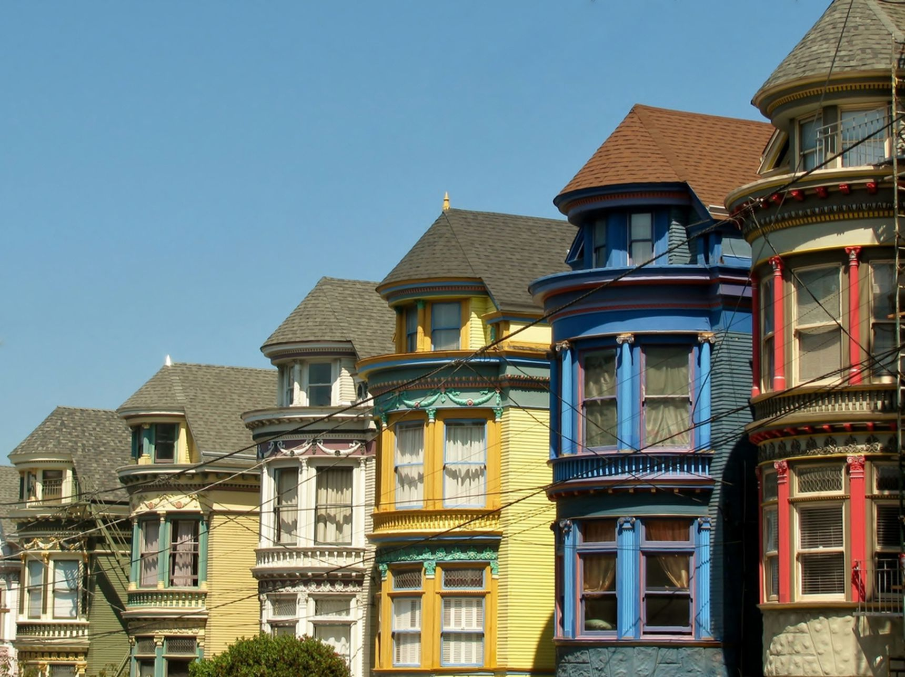
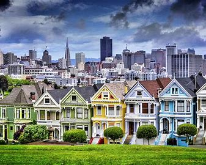
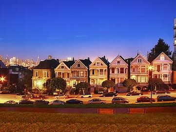

History
The Painted Ladies are a row of Victorian houses located in San Francisco. They are known for their beautiful architecture and colorful facades. Built between 1892 and 1896, these houses have become one of the city's most iconic landmarks.
These houses survived the 1906 earthquake and fire, and over the years, they have been meticulously restored to maintain their historical charm. The Painted Ladies are a popular spot for tourists and have been featured in various movies and television shows, including the opening credits of "Full House."
Visitor Information
- Location: Alamo Square Park, San Francisco, CA.
- Best Time to Visit: Early morning or late afternoon for the best lighting for photos.
- Admission: Free to visit and view from the park.
- Facilities: Public restrooms and seating areas available at Alamo Square Park.
- Public Transportation: Easily reachable by bus, Muni, and BART.
Painted Ladies Gallery




